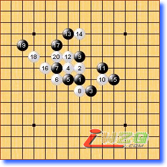
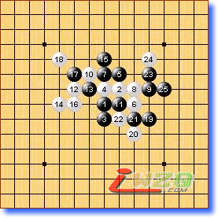
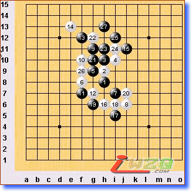
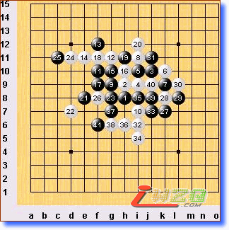
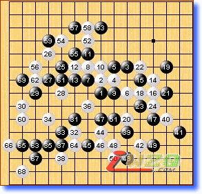
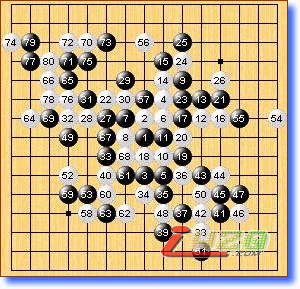

第十届世锦赛A组第四轮略评
#1 第十届世锦赛A组第四轮略评 作者：有志青年 发表时间：2007-8-11 12:38:55
第一局 黑方 oll 白方 Yamaguchi（山口） 白胜
两位都是快枪手，本轮结束最早最干脆的一局。本来是白苦斗的局面，因为一步莫名的15局面被白逆转（大概是黑方忽略了16的反击手段），实战山口锐利的16，让oll不知所措，17是直接的败因。17－10e局部正确的防守之一。山口气势如虹，谁能阻击山口我们拭目以待……

第二局 黑方 吴镝 白方 lio 黑胜
本局吴镝选择这个5让我们观战的有点犯嘀咕，黑7更是有点挠头。或许吴镝在现场能根据实际情况选择对策吧，有意示弱引lio用强？实战白方的确非常的过份，遭到吴镝的迎头痛击。如lio能心平气和的处理，黑棋要想取胜很困难。祝贺吴镝获胜！

第三局 黑方 purk 白方 kozhin 黑胜
kozhin又祭出他的寒星法宝，可惜这次用错了对象。purk的11手我观战时经过拆解发现黑必胜！换句话说此白4黑5能胜（至于外界说的此黑5必胜法是否和本局相同本人不得而知）。实战12次强防，此变化黑易解。白12－8j是一个不易察觉的强防，变化将比实战有趣的多。强悍的purk！

第四局 黑方 Sushkov 白方 Chingin 白胜
Sushkov局后一定会很懊悔，错失一次取胜良机。白14是必败的防守，黑15～23似乎误算，27后已经很难维持局面平衡了。37应该在4J顽抗，不过就实战来说白棋优势实在太大，很难防守的住。Chingin的好局。

第五局 黑方 Taimla 白方 Savrasova 白胜
Taimla采用Sushkov对付他的那局变化来考验Savrasova，白方并未给出很好的答案，双方混战。至于白胜的结果，一时没搞清Taimla怎么输的，明天看些具体的消息再说吧。

第六局 黑方 karlsson 白方 okabe 和棋
okabe用了一个少见的变例，从过程来看是成功的。黑方的下法不好，还好老将苦守成和。
